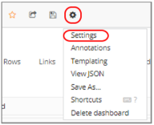

Customizing a Dashboard
You can customize a dashboard as desired, and then save the customized dashboard if you wish. Note however that two types of changes are not considered customizations and are not saved: the selected sessions and the selected time filter.
To save your customizations, refer toSaving your Customized Dashboard .
Customizing Rows
Adding a row
To add a new row, click + ADD ROW at the bottom of a dashboard page
Editing a Row
To edit a row, click the three grey dots to the left of the row and select the desired option.

The available options include:
| Item | Description |
|---|---|
| Collapse | Hides the row. To show the row again, press the  button. button. |
| Add Panel | Adds a panel to the row, of the type you specify: Graph, Singlestat, Table, Text, Alert List, Dashboard List, or Plugin List. |
| Row Options | Enables editing a row’s settings. For information, refer to Editing a Row’s options . |
| Move Up | Moves the row up. |
| Move Down | Moves the row down. |
| Remove | Deletes the row, following your confirmation. |
Editing a Row’s options
To edit a row’s options, click the three grey dots to the left of the row and select Row Options.
A pane appears, for setting the row’s options. Edit the row as desired.

Deleting a Row
To delete a row, click the three grey dots to the left of the row and select Remove. Confirm the operation.
Customizing Panels
To edit a panel, click the panel title and click edit in the box that appears.

An editing pane appears, with various editing options that depend on the panel type (text, graph, table or singlestat), as described below. ![ref8]
Editing a Panel’s General Options
Select the General tab to edit the panel’s general options.

Editing a Graph Panel
A graph panel can be customized in various ways, as described below.
Specifying the Metrics
You can specify which metrics to display for which sessions.
To specify the metrics:
-
Click the panel’s title and select edit.
-
Select the Metrics tab. The metrics currently displayed in the graph are displayed in the table.

- To add a measurement, click Add Measurement. A new line appears in the table.

- Edit the new line:
Select metrics for the new line you added.
- Optionally edit the selection of a metric in an existing line.
The following table describes some of the operations available in the Metrics tab. ![ref8]
| Item | Description |
|---|---|
| 1 | Enables selecting a category of statistics: > Total ‒ Sums the values for each statistic across all the Scripts running during the test. > ScriptName::Total ‒ Sums the values for each statistic across all instances of the specified script running during the test. > ScriptName@LoadGenerator ‒ Sums the values for each statistic across all instances of the specified script running under the specified Load Generator during the test. |
| 2 | Depending on your choice in ①, enables selecting a sub-category of statistics. |
| 3 | Depending on your choice in ②, enables selecting a sub-category of statistics. |
| 4 | Depending on your choice in ③, enables selecting a sub-category of statistics. |
| 5 | Depending on your choice in ④, enables selecting a statistic. |
| 6 | Enables: Toggling between Edit mode and Display mode Duplicating a line Moving a line up Moving a line down |
| 7 | Toggles between showing and hiding the metrics in the graph |
| 8 | Deletes the line. |
| 9 | Adds a new line in the table for defining a new metric in the graph. |
Defining the Axes Display
To edit a panel’s axes display:
- Click the panel’s title and select edit.
- Select the Axes tab.
A pane appears, displaying the current axes definitions. You can change any of the definitions, and the graph display changes accordingly. ![ref10]

Defining the Legend
To edit a panel’s legend:
- Click the panel’s title and select edit.
- Select the Legend tab.
A pane appears, displaying the legend definitions. You can change any of the definitions, and the graph display changes accordingly.

Defining the Display
To edit a panel’s display:
- Click the panel’s title and select edit.
- Select the Display tab.
A pane appears, displaying the display definitions. You can change any of the definitions, and the graph display changes accordingly.

Defining the Time Range
To edit a panel’s time range:
- Click the panel’s title and select edit.
- Select the Time range tab.
A pane appears, displaying the time range definitions. You can change any of the definitions, and the graph display changes accordingly.

Editing a Singlestat Panel
Working with a singlestat panel is similar to working with a graph panel. A measurement is selected in same way (refer toSpecifying the Metrics), but you can only select a single measurement for a singlestat panel. Note that this makes singlestat panels unsuitable when working with multiple sessions. ![ref10]
Defining the Singlestat Display Options
To edit a singlestat panel’s display:
- Click the panel’s title and select edit.
- Select the Options tab.
A pane appears, displaying the display definitions. You can change any of the definitions, and the graph display changes accordingly.

Editing a Table Panel
You can customize a table panel’s display directly in the dashboard.

The header of the table panel provides the following options:
- Sorting the table display – Clicking any column head sorts the table by that column in ascending or descending order.
- Filtering by severity – By clicking the down arrow in the Severity column head, you can select whether to view messages of all severity types, or of a certain type.
Editing a Text
To edit the text in a Text panel, click the panel’s title and select edit, and then select the Panel tab.

You can:
- Select the mode:
- Text – Plain text
- Html – HTML
- Markdown - Markdown markup syntax
- Edit the text as desired.
Adding Panels
To add a panel in a row, click the three grey dots to the left of the row and select Add Panel. Select the panel type: Graph, Singlestat, Table, Text, Alert List, Dashboard List, or Plugin List..
A new empty panel of the selected type appears in the row.
Define the display in the panel by editing the panel, as described above.
Duplicating a Panel
The duplication feature is useful if you wish to create a panel that is very similar to an existing one, or that is based on an existing panel.
To duplicate a panel:
1. Click the panel’s title and select Duplicate.
A new panel – a duplicate of the original – is created in the dashboard. You can now edit it as desired.
Deleting a Panel
To delete a panel:
- Click the panel’s title and select the Delete icon the top right corner.

- Confirm the deletion.
Customizing General Dashboard Settings
You can customize various general dashboard settings.
To configure general dashboard settings:
- Click the Manage Dashboard Settings icon in the middle of the dashboard header, and select Settings.

A Dashboard Settings pane appears, with multiple tabs.
- Set the General settings as desired.

For example, if you select Shared Crosshair, then hovering over one the graphs causes a corresponding crosshairs to appear in all the graphs.

- Set the Rows settings as desired. For example, use the up and down arrows to switch between the locations of rows in the dashboard.

- Set the Links settings as desired. This enables adding links that appear under the Dashboard header. You can add a link to any site, or to a dashboard.

- Set the Time picker settings as desired. For example, you can set the Auto- refresh options that appear in the Refreshing every dropdown.

- Click Metadata to view the dashboard’s metadata. This includes information about dashboard creation and updating.

Templating a Dashboard
Templating enables the creation of highly interactive and dynamic dashboards. Instead of hard-coding things like server, application and sensor name in you metric queries you can use variables in their place. Variables are shown as dropdown select boxes at the top of the dashboard. These dropdowns make it easy to change the data being displayed in your dashboard.
For more information, refer to http://docs.grafana.org/reference/templating/.
Annotating a Dashboard
Annotations provide a way to mark points on the graph with rich events. When you hover over an annotation you can get title, tags, and text information for the event.
For more information, refer to http://docs.grafana.org/reference/annotations/.